Mass-Spring-Damper¶
Introduction¶
This is a tutorial for creating a mass-spring-damper system in a uniform gravitational field, which is the fundamental problem used in study of linear vibration. The animation below is generated in MOMDYN at the completion of the tutorial.
{kind=link}
The model is generated using two variations on the kinematics interface, “Classic,” and “Joints.” The former is akin to a pencil-and-paper approach, each symbolic parameter is individually named by the user, and each frame, vector, and point is created using these parameters. The latter is closer to the approach used in modern mulitibody dynamics software, where lower-level modeling attributes are consolidated into the joint object, reducing the total number of steps.
New Model¶
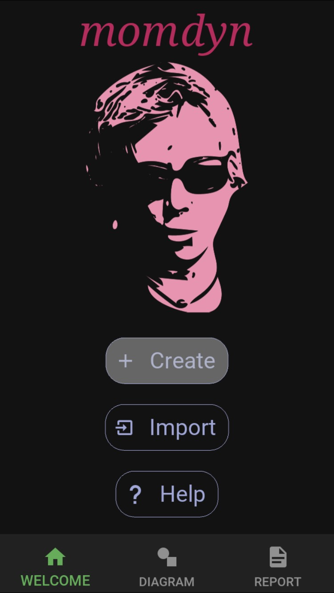{kind=link}
{kind=link}
{kind=link}
To begin, from the welcome screen tap the “Create” button, which will bring up a dialog with the title “Create - Specify Settings.” Many of the settings in this dialog can remain with their defaults. The modified specifications give a model name and description, and creates gravitational force, time, and tolerance. Enter the following:
- Create - Specify Settings
model_name: Oscillator
model_description: Simple mass-spring-damper as is common in linear vibration analysis
gravity_method: Uniform
gravity_constant: 9.8
gravity_direction: -Y
time_duration: 5
tol: 0.00001
Tap the green check in the lower right, which will bring up a blank diagram. Tap the save button, as we will be returning to this stage later in the tutorial.
Classic Interface¶
Here we will use the classic interface, which allows for more direct control over the fundamental building blocks of the kinematics. The joints interface is more convenient for many applications, as it consolidates functionality of the building block components into common mechanical joints, and doesn’t require individually defining all of the symbols, vectors, and points in the model. If you are interested in using the joints interface, you may skip steps (Xa) through (Xa) below, and proceed to step (Xb)
Create Symbols¶
Displacement Coordinate¶
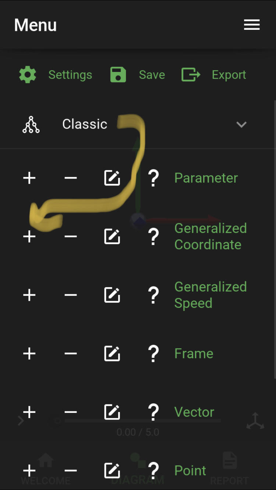 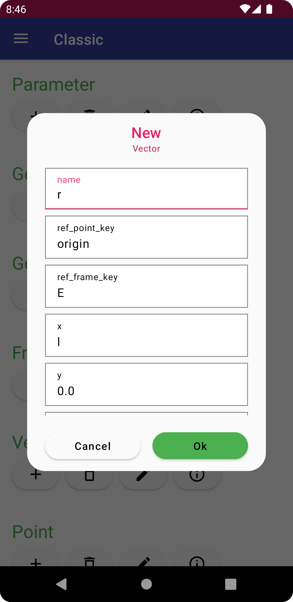{kind=link}
{kind=link}
Next create the generalized coordinate, y, corresponding to the translational degree of freedom. With the classic panel open, tap the plus sign to the left of generalized coordinate, and enter the following specifications
- New Generalized Coordinate
name: h
initial: 1
description: displacement
Kinematics¶
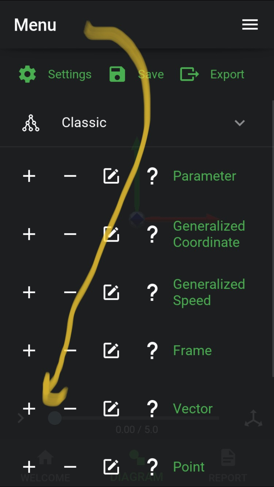 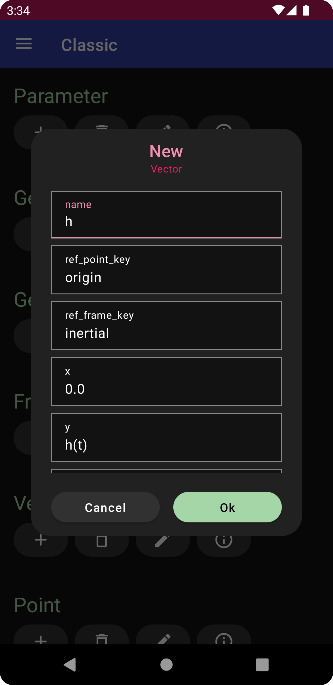 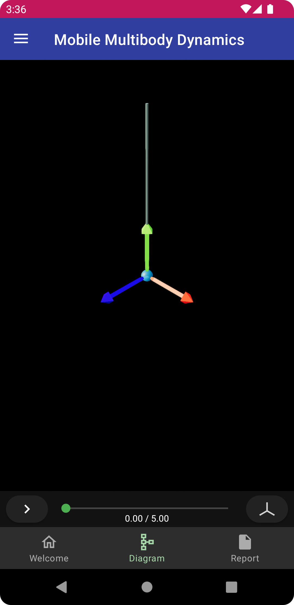{kind=link}
{kind=link}
{kind=link}
Once again, with the classic panel open, tap the plus sign to the left of vector, and enter the following
- New Vector
name: h
y: h(t)
and tap the green check button to create the vector named y, aligned with the j axis of the inertial frame, with length equal to the generalized coordinate y.
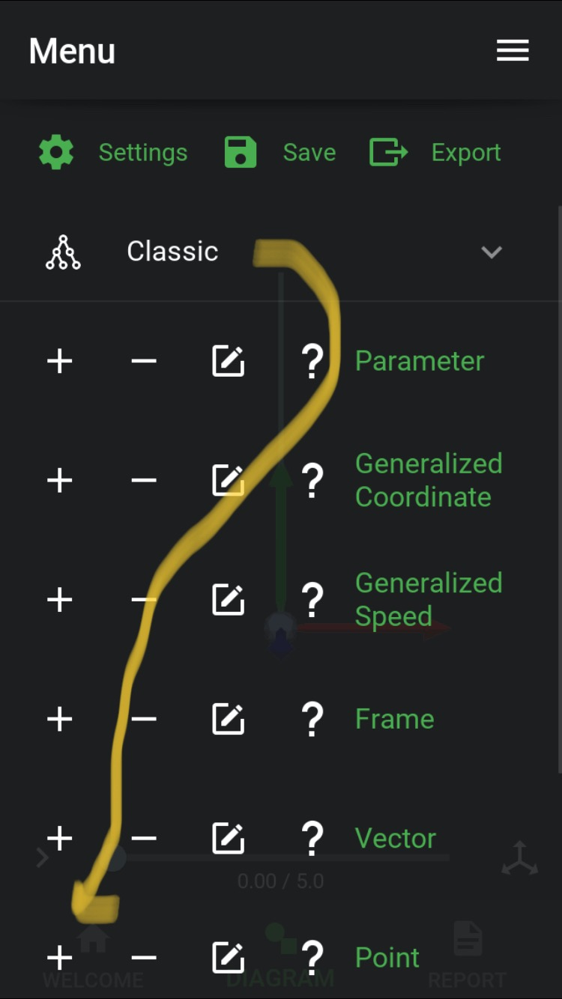 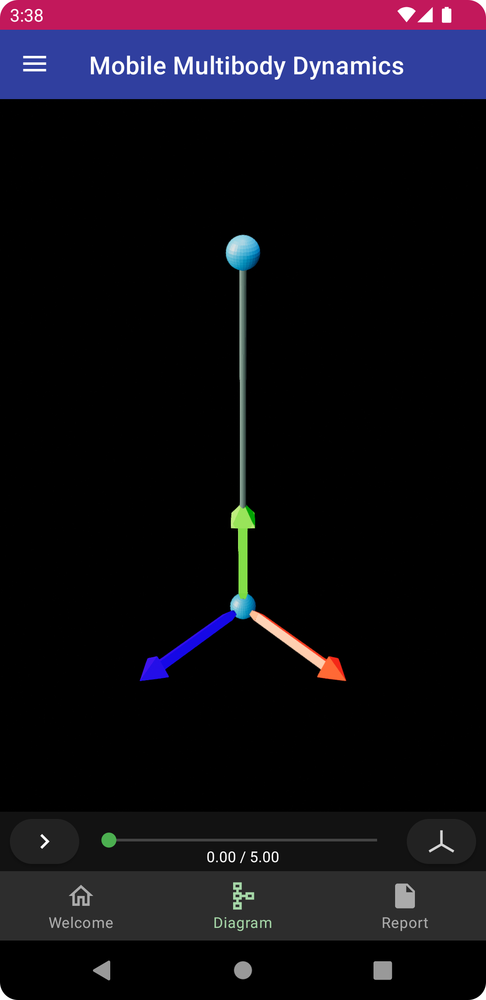{kind=link}
{kind=link}
{kind=link}
Next, tap the plus sign to the left of point, and enter the following
- (7a) New Point
vector_key: y
and tap the green check button to create the point a at the end of the vector y. Minimize the edit menu by tapping the three horizontal lines, at which point you should see the diagram updated to include the new vector and point.
Spring¶
 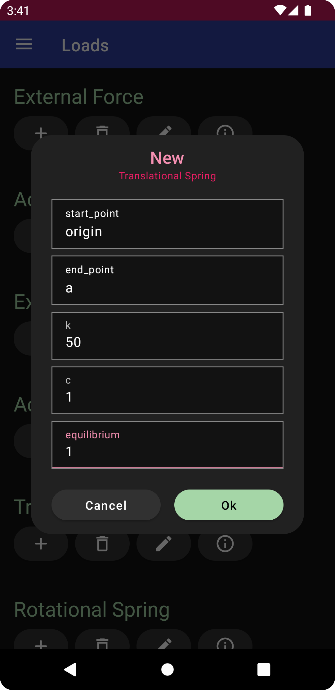
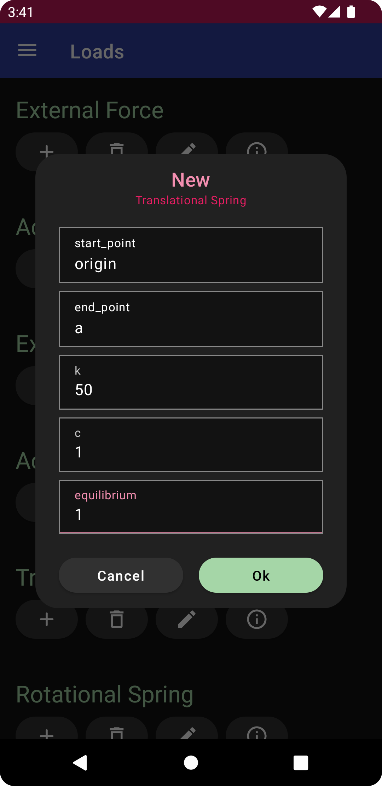
{kind=link}
{kind=link}
Collapse the classic panel, and expand the loads panel, and then tap the plus icon to the left of translational spring. Enter the following
- New Translational Spring
end_point: a
k: 50
c: 1
equilibrium: 1
then tap the green check mark to create the spring. This will additionally create the parameters kO/a, cO/a, and eO/a, for stiffness, damping, and equilibrium, respectively.
Joints Interface¶
Tap on the welcome tab on the bottom of the screen, then the import button, and select the saved user.Oscillator file, which will return the model to its state after step (1). Open the edit menu, and expand the joints panel, then tap the plus sign to the left of prismatic. Add the following specifications, leaving line items that are unlisted at their default value,
- New Prismatic
y: 1
value: 1
k: 50
c: 1
equilibrium: 1
and then tap the green check button to create the joint.
Bodies¶
Point Mass¶
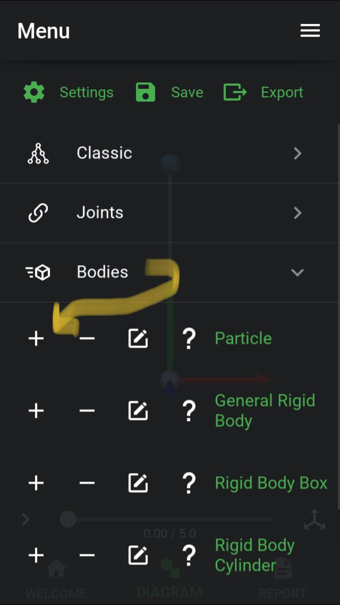 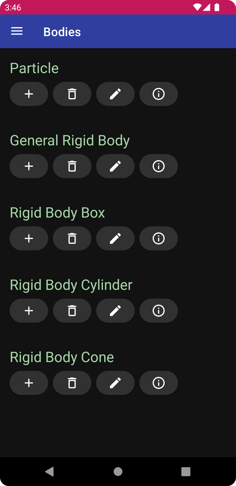 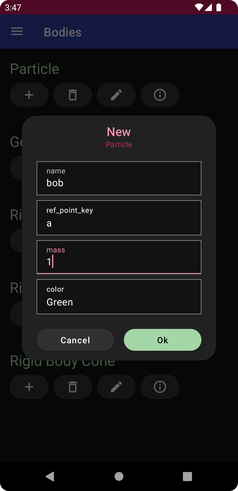 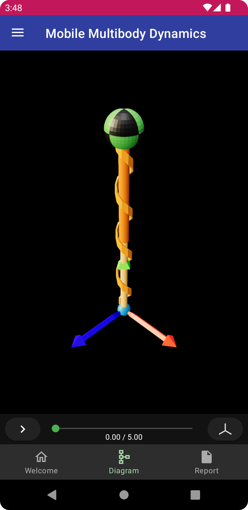{kind=link}
{kind=link}
{kind=link}
{kind=link}
Expand the bodies panel. Tap on the plus sign to the left of particle, and enter the following.
- New Particle
name: bob
ref_point_key: a
mass: 1
which will create the bob with mass of 1 attached to the point a, as shown. Additionally, the parameter mbobwill be created. Tap the button labeled [3] to switch to the two-dimensional diagram, where you will see the depiction of the spring with symbolic parameter labels.
Analysis¶
Simulation¶
To generate equations of motion, tap the right-arrow button in the lower left corner of the diagram. Since this is a very simple model, the derivation run nearly instantaneously. Once complete, the icon will change to the outline of a play button. Tap again to run the simulation, once again this will be nearly instantaneous. Tap again to play the animation, which will show the mass bouncing with around a 1 second period, as seen previously at the top of this page.
Model Export¶
Open the edit menu by tapping the three horizontal lines in the upper left corner, and then tap on the export button. Tap each of the three line items, Model, Simulation, and Python, to activate them, and then tap the check button in the lower right to export the files. The Model file (momdyn_model.py) is the format used to import to the MOMDYN app. The Simulation file (simulation.csv) are the time-series reflecting the generalized coordinates and speeds that are animated. The Python file (py_model.py) contains code that can be executed and further manipulated on a desktop Python environment.
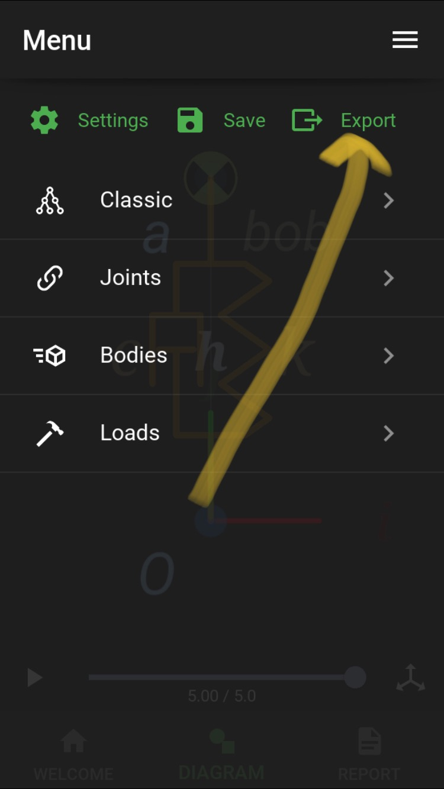{kind=link}
{kind=link}
{kind=link}
{kind=link}
Report¶
Tap on the report tab in the lower right to open up the report view showing text, equations and plots. The buttons at the top specify which section of the report to view. From left to right these are symbols, frames, points, bodies, loads, equations, and plots. The images below show these sections for the Oscillator model, omitting frames as there are none (except for the inertial frame).
{kind=link}
{kind=link}
{kind=link}
{kind=link}
{kind=link}
{kind=link}